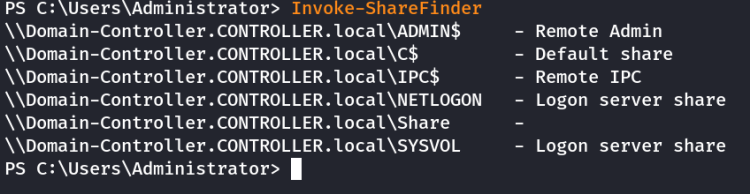

Powerview
Powerview
Powerview is a powerful powershell script from powershell empire that can be used for enumerating a domain after you have already gained a shell in the system.
We'll be focusing on how to start up and get users and groups from PowerView.
1.) Start Powershell: powershell -ep bypass ---→ bypasses the execution policy of powershell allowing you to easily run scripts

2.) Start PowerView: . .\Downloads\PowerView.ps1
3.) Enumerate the domain users: Get-NetUser | select cn

4.) Enumerate the domain groups: Get-NetGroup -GroupName *admin*

5.) To get Operating System details use: Get-NetComputer -fulldata | select operatingsystem

6.) To get share details: Invoke-ShareFinder

Now enumerate the domain further on your own
Here's a cheatsheet to help you with commands: https://gist.github.com/HarmJ0y/184f9822b195c52dd50c379ed3117993